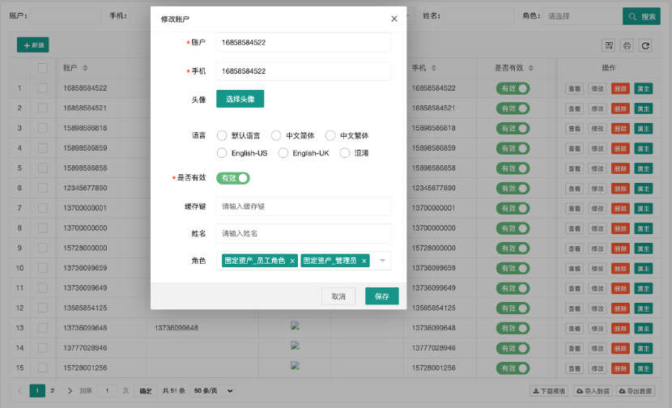
EAM 系统使用手册
1 系统管理
1.1 权限管理
1.1.1 账户管理
EAM 系统账户管理，本菜单提供系统所有基本账户的管理，该账户菜单中账户同时也
作为登录本系统的账户。其中角色为该账户拥有的系统功能角色。
属主设置：
账户的属主设置，作为该账户的所属租户公司和具体租户公司的员工进行关联，支持一
对多。当该租户公司的该账户登录时，将当前默认的属主设置关联的具体的公司员工作为当
前登录的账户。
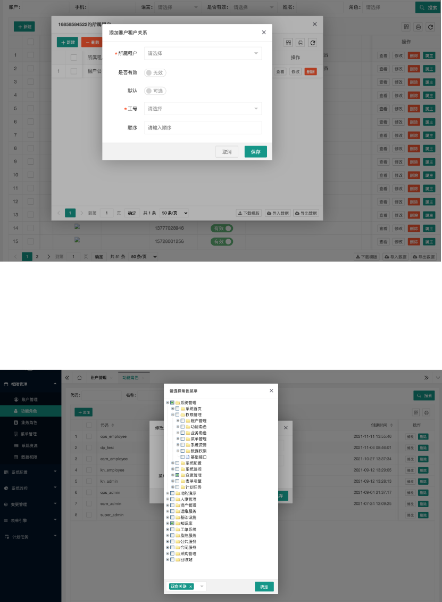
1.1.2 功能角色
EAM 功能角色，EAM 系统采用基于角色的访问控制方法，通过功能角色赋予系统人员
相关权限。
注意：
建议所有的功能角色都勾选系统管理->权限管理->基础接口这个选项。该菜单包含系统
使用的相关基本接口。
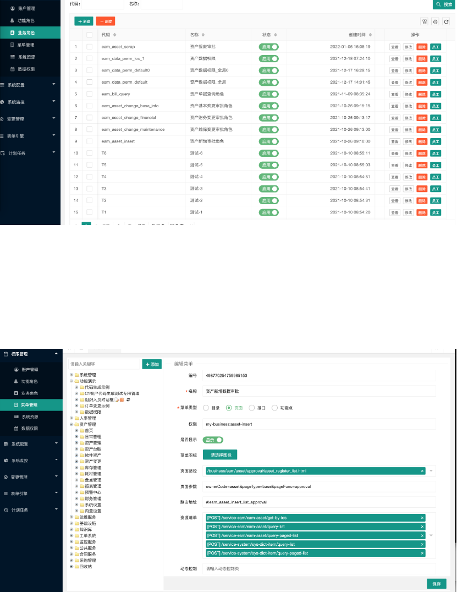
1.1.3 业务角色
EAM 业务角色，业务角色承载了 EAM 系统多种功能角色的实现，包含数据角色、流程
角色等，创建相关业务角色后，点击员工按钮，相关员工就拥有该业务权限，如果业务权限
代表数据权限范围，则表示该员工拥有该数据权限，如果该业务角色代表流程角色，则选定
的员工拥有相关流程审批权限。
1.1.4 菜单管理
EAM 系统菜单管理，主要面向开发人员，对于整个系统的菜单进行配置，系统管理员
通可以调整菜单的位置，进行更友好的去显示。
相关字段说明：
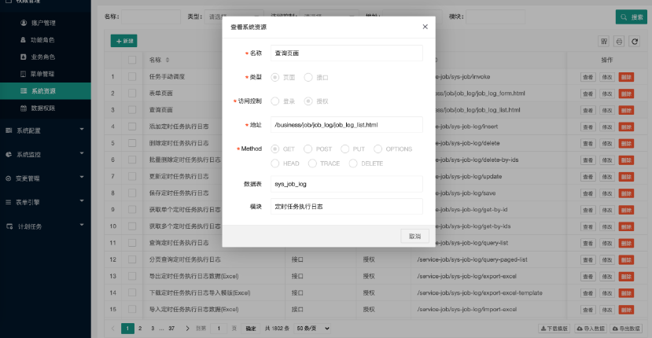
编号：系统自动生成。
名称：菜单的具体名称。
菜单类型：支持目录、页面、接口、功能点，其中目录为逻辑上的概念，页面会具体菜
单的显示页面，接口为 API 接口提供赋权操作，功能点可以支持按钮，逻辑操作等相关功能
。
权限：按照规范去编写权限规则，要求系统内部权限编码唯一即可。
菜单图标：前端系统功能菜单树显示的友好图标。
页面路径：当菜单类型为页面时，指定具体打开的页面地址。
路由地址：当菜单类型为页面时，指定具体打开页面地址对应的浏览器 URL 路由地址
资源清单：当前菜单节点，需要访问的资源地址。
动态控制：略
1.1.5 系统资源
EAM 系统权限资源管理，主要面向开发人员，对于整个系统的权限资源进行统一管理，
当前主要包含系统内部所有 URL 访问地址。
相关字段说明：
名称：系统权限资源名称
类型：支持页面和接口。
访问控制：登录和授权
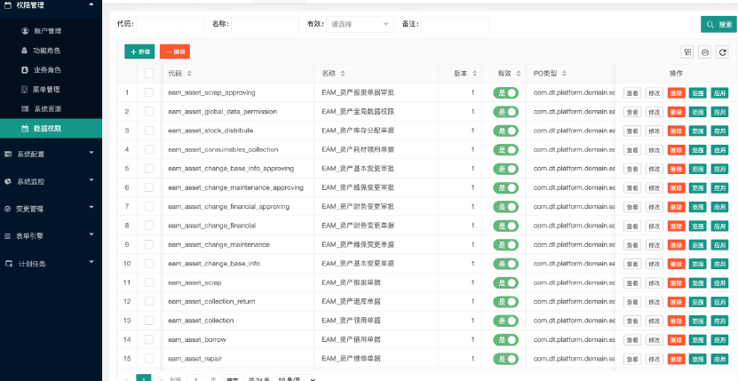
登录：该策略代表用户登录后就拥有该资源的访问权限
授权：该策略代表用户需要获取该资源的授权，才能进行访问
地址：访问 URL 资源地址
Method：访问资源的方法
数据库表：该资源对应的数据表，非必须，用作标识
模块：该资源对应的系统模块，非必须，用作标识
1.1.6 数据权限
EAM 数据权限管理，主要面向开发人员，对 VO 的权限进行设置。
1.2 系统配置
1.2.1 系统参数
EAM 系统参数功能支持多个 profile 切换，当为找到相应设置的 profile 时，默认的 profile
生效。
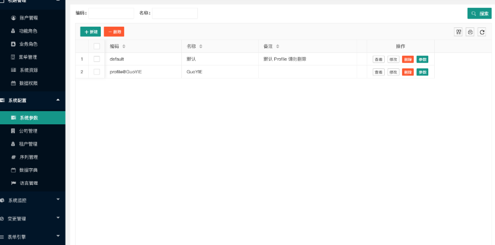
系统主要参数说明：
system.cachekey：当修改该数据时，会对页面进行刷新，每次系统进行升级更新建议修
改。
system.login.default：Demo 使用，系统登录页面默认显示的信息
system.password.default：系统创建用户时的默认密码
system.login.captcha.any:Demo 使用，系统登录页面时无视登录验证码
system.employee.createUser：当在组织架构创建员工时，是否同步创建他的用户登录账
户，建议同步创建。
eam.assetDataPermissions：EAM 资产管理系统默认对 Asset 的资产访问进行控制，如果
该值设置为 0，则全局关闭资产访问的权限设置，所有人将能看到所有资产数据。
eam.assetImportAssetCodeKeep：当批量导入资产数据时，对资产数据的资产编号列处
理的策略，默认资产编号列为系统自动生成，当该设置为 1，则不会自动生成资产编号，采
用 excel 手工填写的值作为资产编号，该功能建议在首次资产初始化时使用，正常情况下设
置为 0 即可。
eam.assetImportDataReplenish：如果设置为 1，当批量导入资产数据时，对应部分下拉
框数据并未在数据字典中存在，将自动创建，建议设置为 0
eam.assetStatusColumnDisable：在新建数资产时，是否可以资产的资产状态列进行编辑
。
eam.assetSerialNumberIsUnique：是否保持当前所有资产数据序列号唯一。
1.2.2 公司管理
当本系统处于 SAAS 模式下，支持多公司，默认至少存在一家公司。
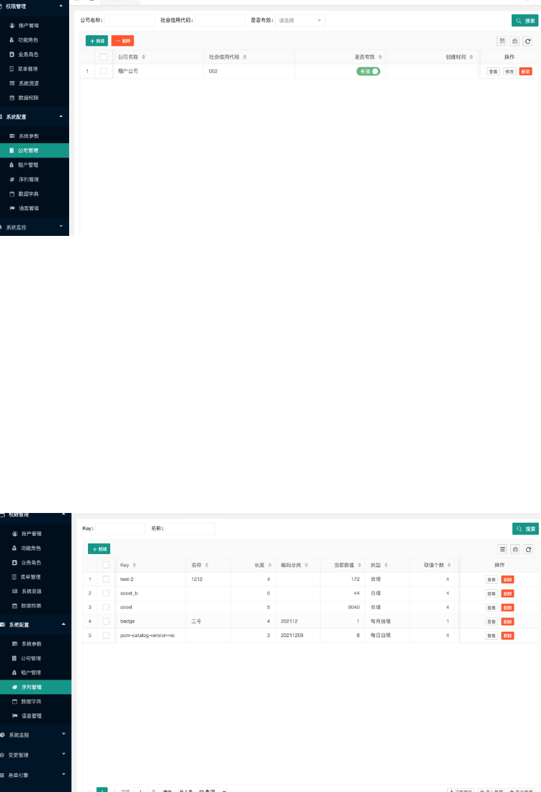
1.2.3 租户管理
当本系统处于 SAAS 模式下，支持多租户管理，默认至少存在一家租户公司。
1.2.4 序列管理
序列管理菜单主要面向开发人员，系统中使用的相关序列配置，不建议进行修改。
1.2.5 数据字典
本系统的数据字典管理功能。
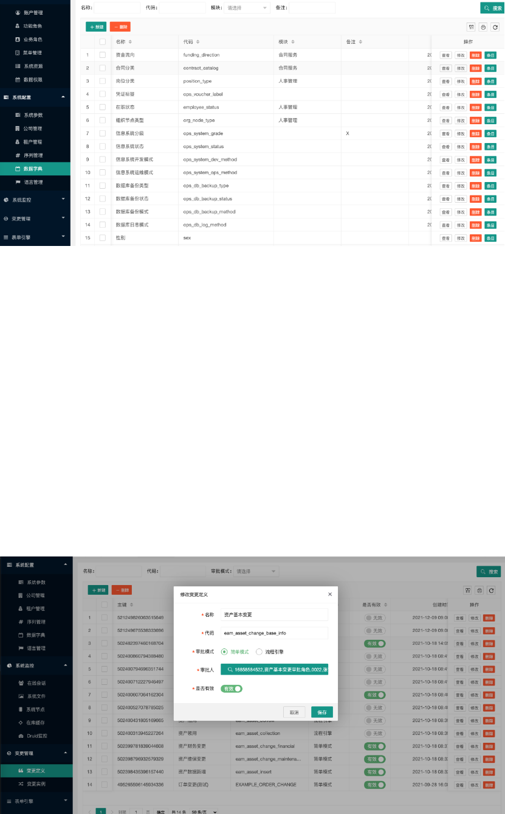
涉及 EAM 的数据字典：
资产来源、资产安全等级、资产报修类型、资产处置类型、资产审批类型、维
保状态、设备运行环境、资产盘点计划类型
1.3 变更管理
1.3.1 变更定义
本系统的变更定义菜单提供系统内部相关变更流程的支持。涉及 EAM 流程变更包含资
产调拨、资产基本财务变更等
当前系统的变更支持两种审批模式：
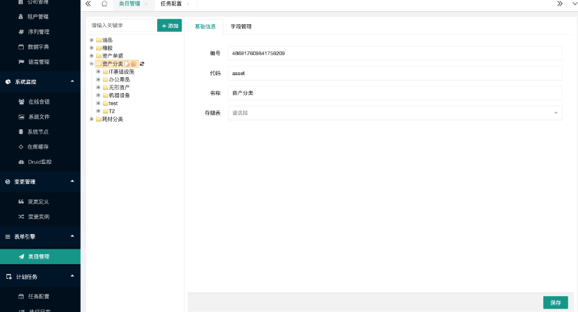
简单模式：当变更模式为简单模式，则只能支持单个审批节点的变更，审批节点支持人
活着业务角色。
流程引擎：通过流程引擎的方，灵活定义流程节点实现业务变更的支持。
变更代码作为业务变更指定唯一键。
1.4 表单引擎
1.4.1 类目管理
类目管理支持 EAM 资产管理的常用类目管理，支持自定义属性，自定义布局布局。属
性可以支持继承。
基础信息：
编号：类目编号为系统自动生成
代码：类目代码，默认自动生成，代码上可通过类目编号来区分不同功能的类目
名称：类目名称
存储表：当类目支持自定义属性的时候，需指定一张存储表，不管指定哪一张逻辑上没
有区别，为规范起见，建议同一类型类目指定同一张存储表。
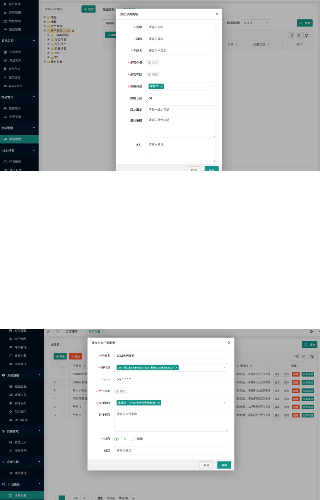
字段管理：
当类目支持多个自定义属性时候，按照要求对类目的节点的属性进行扩展，最终属性汇
总分为可编辑版本和生效版本，生效版本为当前系统使用的版本。
1.5 计划任务
1.5.1 任务配置
本系统任务调度配置，可对系统内常用的任务进行定时调度。
注意：
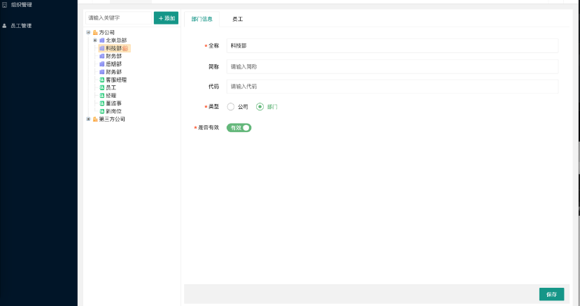
执行器的 java 类型为自动识别，新建的 job 类重启后生效。
2 人事管理
2.1 组织管理
本菜单提供对公司的组织管理，本系统的组织架构设计原则为组织节点类型分为公司和
部门，职位必须挂在组织节点下面，人员必须挂在职位下面。
员工支持两种岗位，主岗位和副岗位。通常岗位设置用作流程选择使用。
注意：
新建员工时，组织节点必须选择职位，人员挂在职位下面。
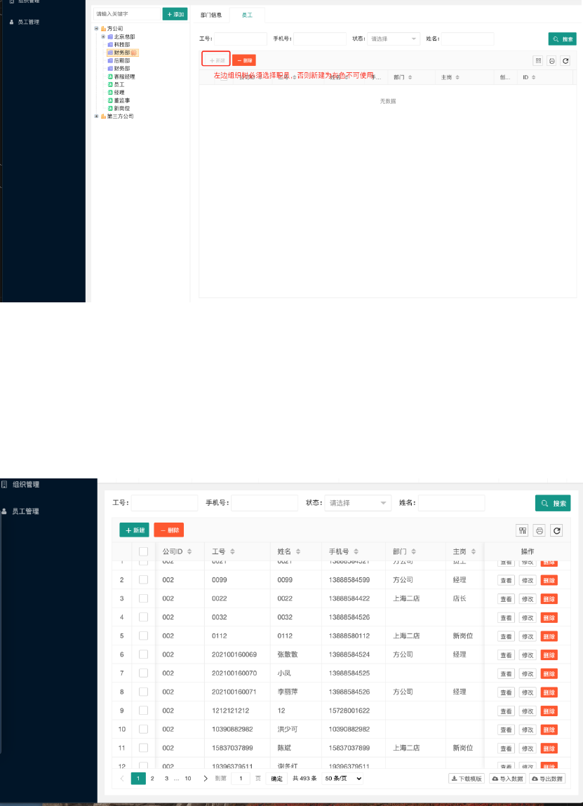
2.2 员工管理
本菜单提供员工管理的基本操作，对员工进行添加、删除及修改。当新建员工时，组织
节点必须选择职位，人员挂在职位下面。
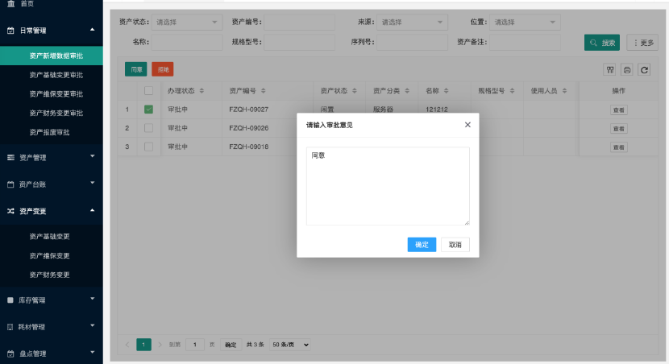
3 资产管理
3.1 日常管理
3.1.1 资产新增数据审批
当系统开启新增资产新增数据审批时，资产维护人员在资产管理数据新增资产后，对新
增加的数据进行送审。送审后相应数据权限和审批权限的审批人登录系统后，在资产新增数
据审批菜单看到待审批记录，选择通过或拒绝审批进行操作。
3.1.2 资产基础变更审批
当系统开启新增资产基础变更审批时，在对选择的资产数据需要进行变更时，拥有该数
据权限和审批权限的审批人登录系统后，在资产基础变更审批菜单看到需要变更的记录，选
择通过或拒绝进行审批操作。
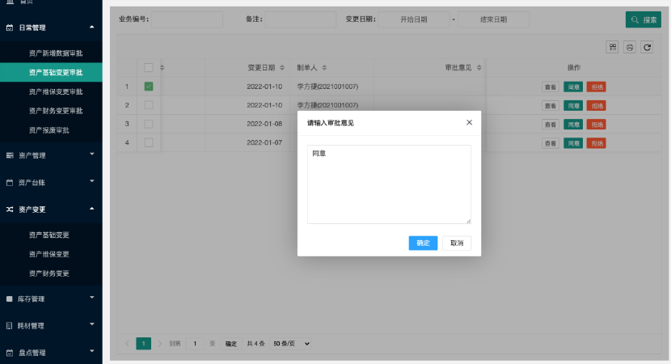
3.1.3 资产维保变更审批
当系统开启新增资产维保变更审批时，在对选择的资产数据需要进行变更时，拥有该数
据权限和审批权限的审批人登录系统后，在资产维保变更审批菜单看到需要变更的记录，选
择通过或拒绝进行审批操作。
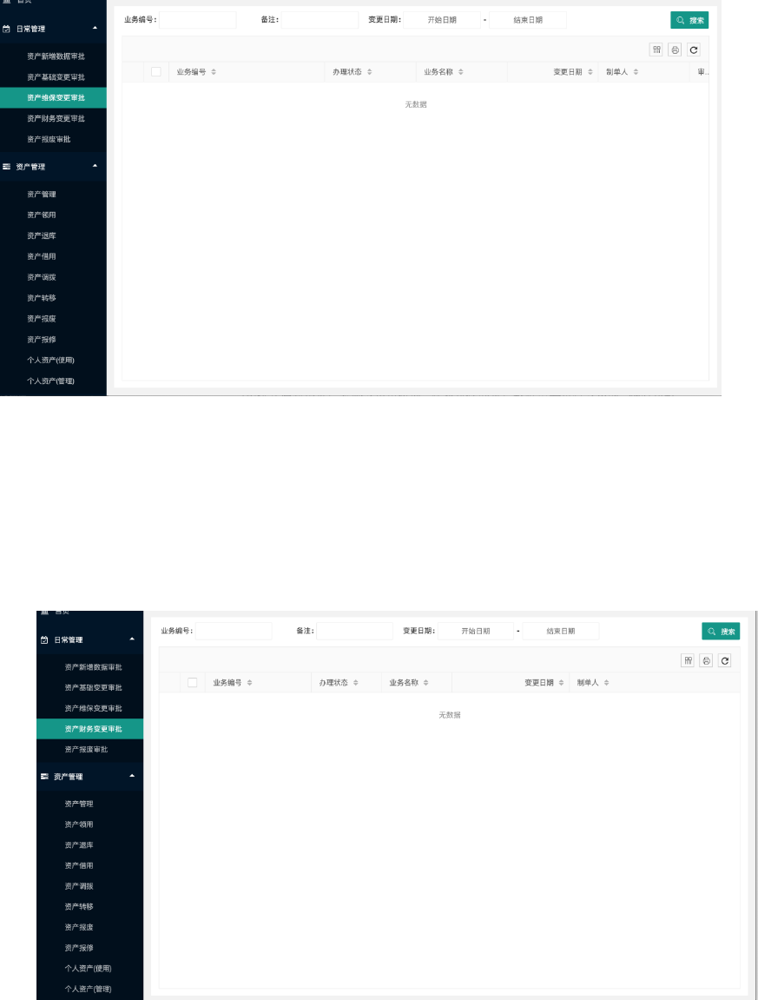
3.1.4 资产财务变更审批
当系统开启新增资产财务变更审批时，在对选择的资产数据需要进行变更时，拥有该数
据权限和审批权限的审批人登录系统后，在资产财务变更审批菜单看到需要变更的记录，选
择通过或拒绝进行审批操作。
3.1.4 资产报废审批
当系统开启资产报废审批时，在对选择的资产数据需要报废时，拥有该数据权限和审批
权限的审批人登录系统后，在资产报废审批菜单看到需要报废的记录，选择通过或拒绝进行
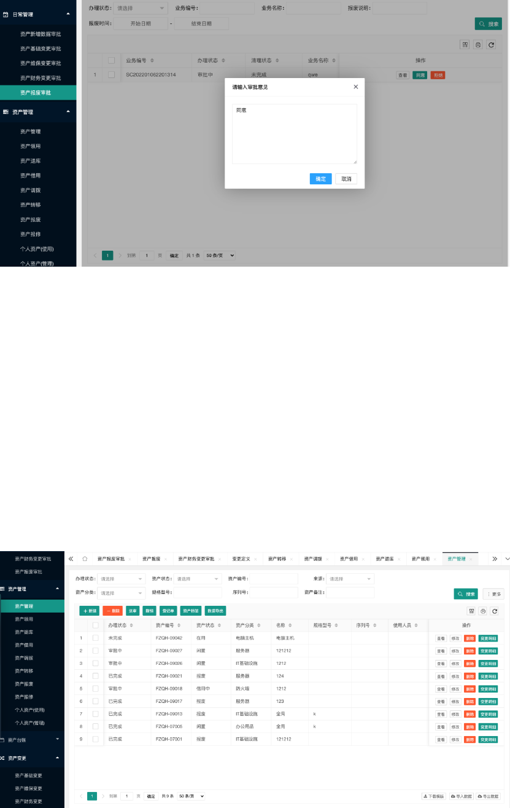
审批操作。
3.2 资产管理
3.2.1 资产管理
资产管理菜单提供资产的基本管理服务，包括资产的新增、修改、删除、资产标签、批
量导入、导出。当资产新增开启流程审批时，新增资产本资产的办理状态为未完成，当前新
增的资产在资产台账中不能被查询到，只有新增资产审批通过，资产办理状态为完成，这可
在资产台账中正常查询到当前新增的资产。
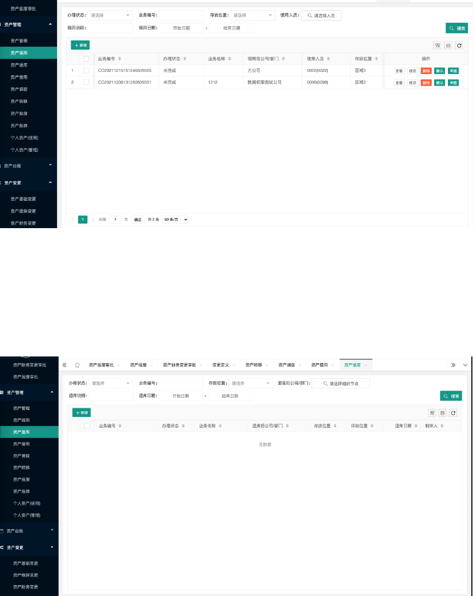
3.2.2 资产领用
资产领用菜单提供资产的领用服务，员工发起资产领用服务，可通过资产领用发起申请
，在创建资产领用并确认后，资产状态将变更为资产领用。
3.2.3 资产退库
当资产领用后，可对领用的资产做退库处理。
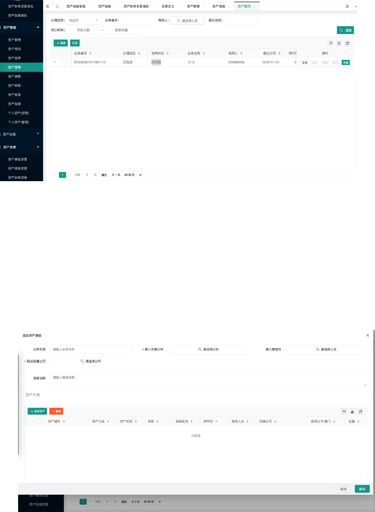
3.2.4 资产借用
资产借用菜单提供资产的借用服务，员工发起资产借用服务，可通过资产借用发起申请
，在创建资产借用并确认后，资产状态将变更为资产借用。当借用期满，可进行归还操作。
3.2.5 资产调拨
资产调拨菜单提供资产的调拨功能，通过资产调拨，可改变资产的归属组织和管理
员资产基本属性。在未开启流程状态时，对创建的的资产调拨单据进行确认，资产相关
属性数据将按照单据的设置进行改变。
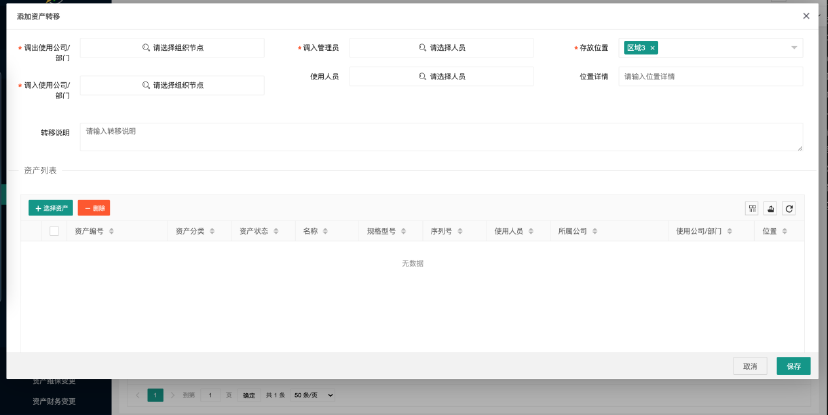
3.2.6 资产转移
资产转移菜单提供资产的转移功能，通过资产转移，可改变资产的使用组织、管理
员、存放位置、位置详情等资产基本属性。在未开启流程状态时，对创建的的资产转移
单据进行确认，资产相关属性数据将按照单据的设置进行改变。
3.2.7 资产报废
资产报废菜单提供资产的报废功能。
当有资产需要进行报废时候，在选择相应资产后单击保存。
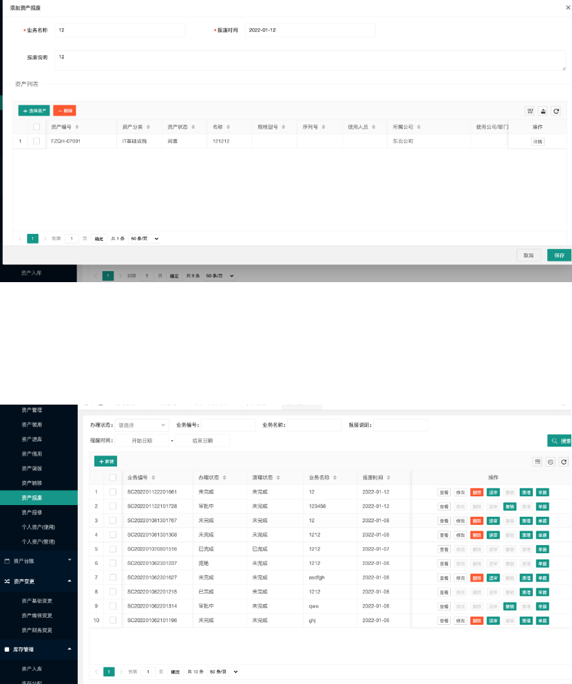
当报废开启流程审批时，需要对报废的单据进行送审操作，流程配置中的相应审批人需
要对该单据进行审批操作。
在报废单据审批结束后，如果审批同意，则对该批需要报废的资产状态设置为报废。但
仍旧会在资产台账中可以查询到，如果需要完全在资产台账中查询不到已报废的资产，可对
当前报废的资产单据做清理操作，在清理操作后，该批资产在台账中无法显示，清理后的资
产可以通过报表管理的资产清理清单中查询到。
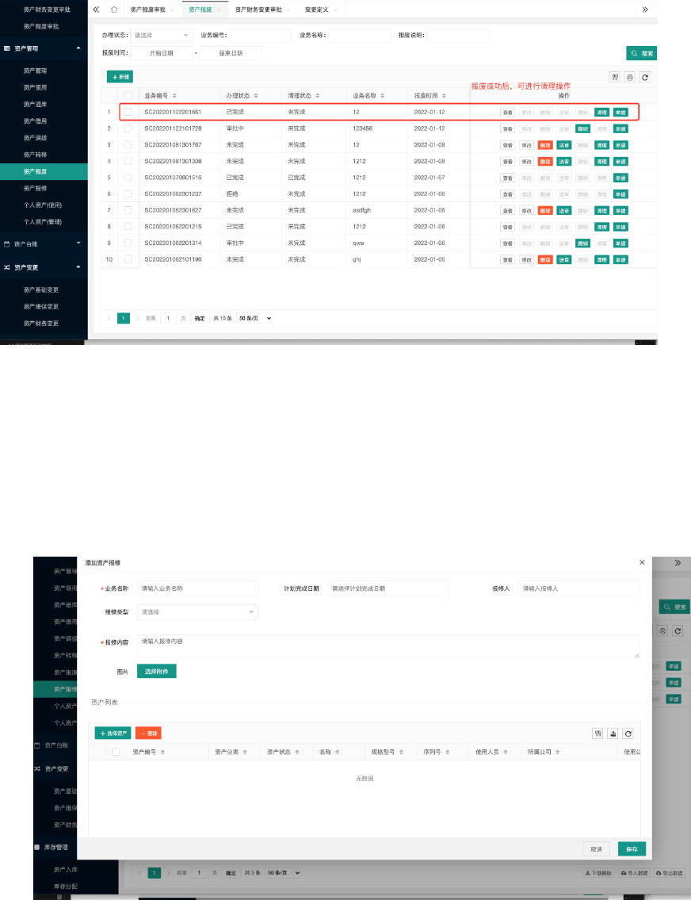
3.2.8 资产报修
资产报修菜单提供资产的基本报修功能。
当有资产需要进行报修时候，在选择相应资产后单击保存。
当流程未启用时，点击确认操作，进行资产的实际报修环节，在确认维修后，资产状态变为
维修中
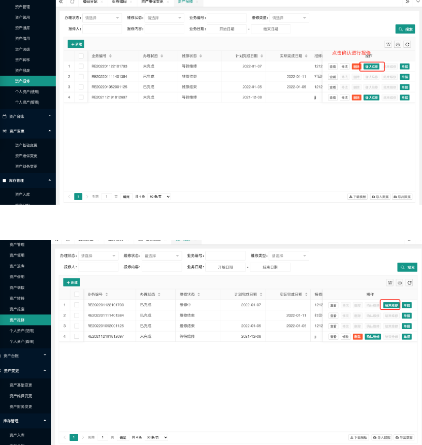
当资产维修结束后，点击结束维修，资产状态变为原维修前状态。
3.2.10 个人资产(使用)
公司员工登录系统后，通过资产使用人字段去判断该资产是否自己拥有的资产，该菜单
显示登录的员工当前拥有的所有资产数据。
3.2.11 个人资产(管理)
公司员工登录系统后，通过资产管理人字段去判断该资产是否时自己管理的资产，该菜
单显示登录的员工当前管理的所有资产数据。
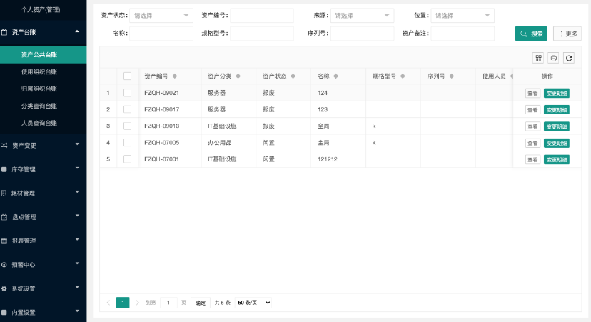
3.3 资产台账
3.3.1 资产公共台账
资产公共台账，提供系统内部查询所有资产的功能，可以按照资产状态、规格型号、来
源等多个维度查询系统内部资产情况。
相关动作
查看：可以查询该资产条目详细的资产信息。
变更明细：可以查询该资产条目的所有曾经进行过的变更记录。
3.3.2 使用组织台账
资产使用组织台账，提供系统内部查询所有资产的功能，可以通过结合左边的使用组织
树结合其他筛选条件进行多个维度的查询系统资产情况。
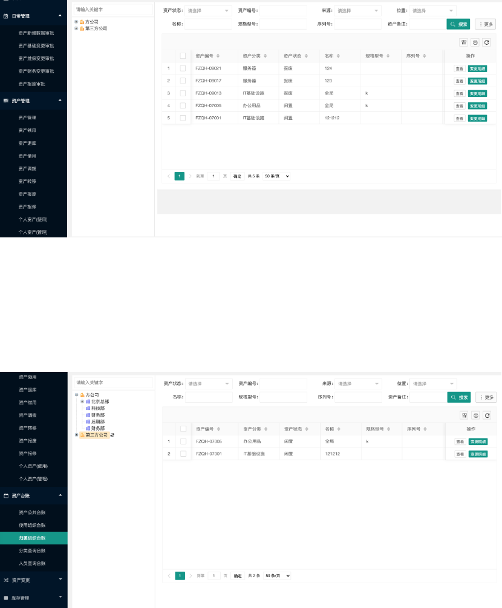
3.3.3 归属组织台账
资产归属组织台账，提供系统内部查询所有资产的功能，可以通过结合左边的归属组织
树结合其他筛选条件进行多个维度的查询系统资产情况。
3.3.4 分类查询台账
资产分类查询台账，提供系统内部查询所有资产的功能，可以通过结合左边的分类查询
台账结合其他筛选条件进行多个维度的查询系统资产情况。
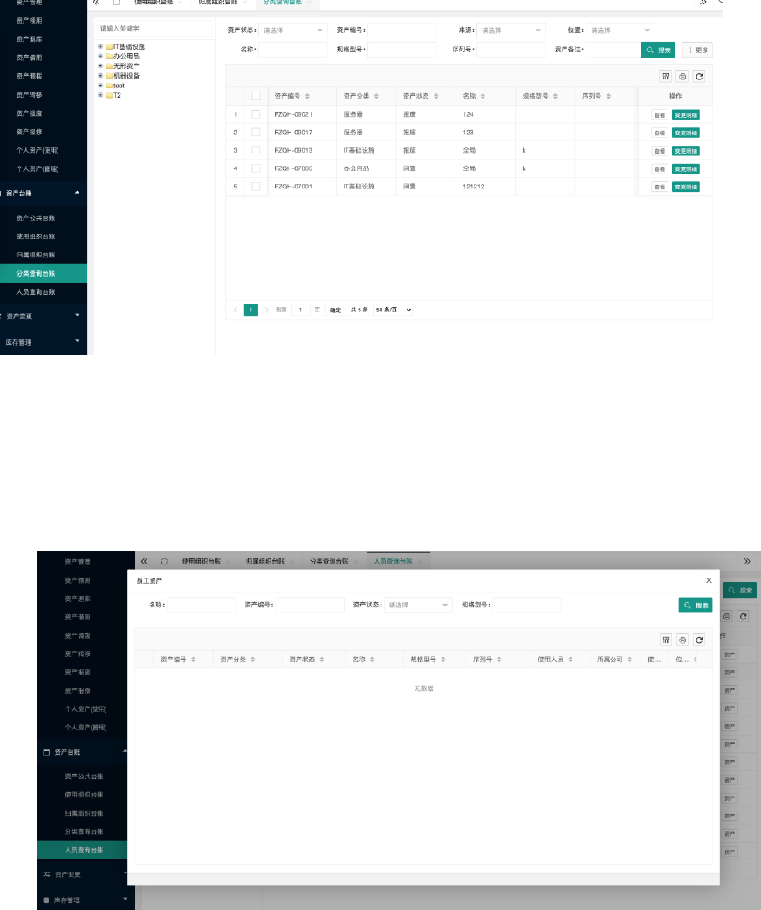
3.3.4 人员查询台账
人员查询台账，可以本菜单提供的功能，可以快速查询系统内部所有人员拥有的资产数
据。
3.4 资产变更
3.4.1 资产基础变更
EAM 系统提供对资产的基本属性字段的变更操作，所有资产字段主要分为基础变更、
维保变更和财务变更，如需要对资产基本字段进行修改，可以使用对应的资产变更菜单进行
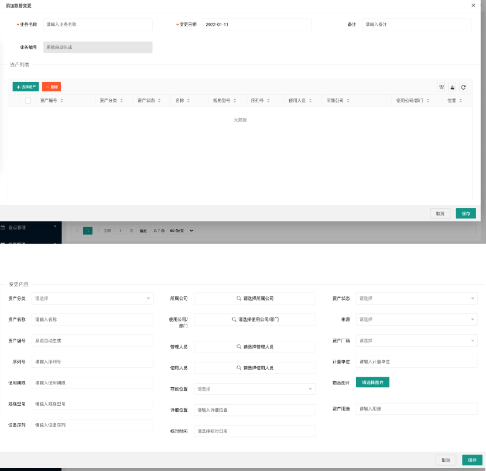
操作，变更菜单支持简单流程，对需要变更的记录进行送审，审核通过进行数据的变更，并
将变更的数据记录在对应的资产变更明细条目中。
注意：
变更明细中如果有变动，则表明将对选择的数据进行该字段的变更，不需要变更则无需
填写内容。
3.4.2 资产维保变更
EAM 系统提供对资产的基本属性字段的变更操作，所有资产字段主要分为基础变更、
维保变更和财务变更，如需要对资产基本字段进行修改，可以使用对应的资产变更菜单进行
操作，变更菜单支持简单流程，对需要变更的记录进行送审，审核通过进行数据的变更，并
将变更的数据记录在对应的资产变更明细条目中。
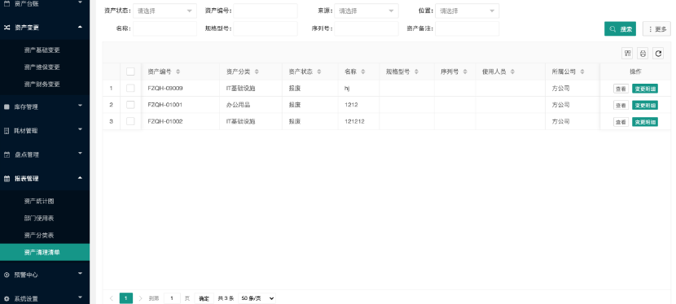
3.4.3 资产财务变更
EAM 系统提供对资产的基本属性字段的变更操作，所有资产字段主要分为基础变更、
维保变更和财务变更，如需要对资产基本字段进行修改，可以使用对应的资产变更菜单进行
操作，变更菜单支持简单流程，对需要变更的记录进行送审，审核通过进行数据的变更，并
将变更的数据记录在对应的资产变更明细条目中。
3.5 报表管理
3.5.1 资产清理清单
资产报废后，可以对资产进行清理，清理后的资产在系统内部不可见，对清理后的资产
进行归档，通过资产清理清单查询已经清理过的资产。
3.6 预警中心
3.6.1 维保到期预警
维保到期预警，可以查询当前资产是否有维保即将到期。
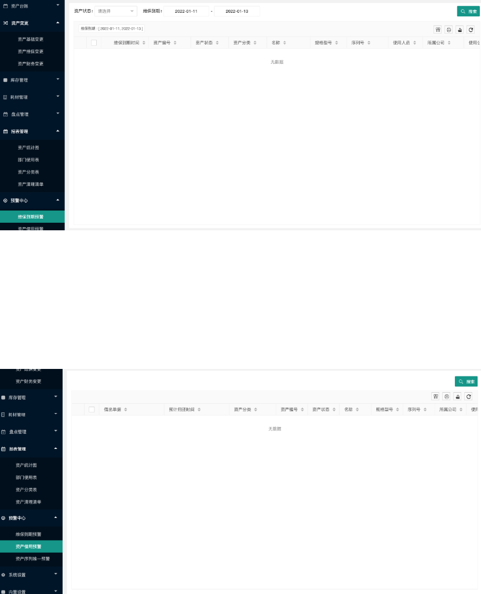
3.6.2 资产借用预警
资产借用预警，可以查询当前资产出借总体情况。
3.6.3 资产序列唯一预警
资产序列唯一预警，可以查询系统内部是否存在资产序列重复数据。
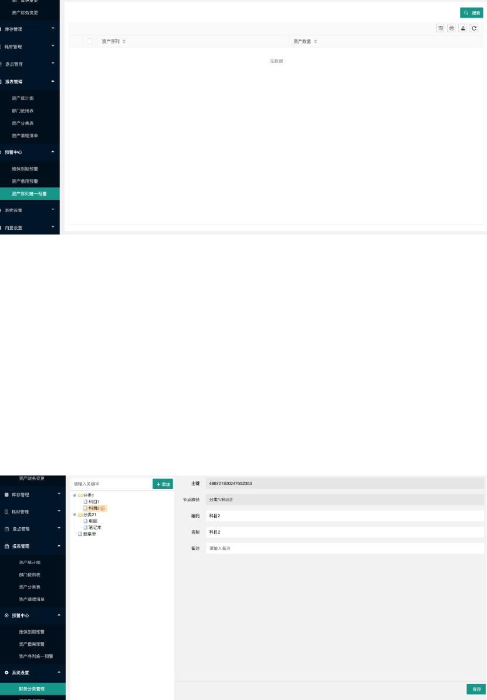
3.7 系统设置
3.7.1 财务分类管理
资产分类管理，支持对资产数据按照财务的分类进行管理，本菜单实现财务分类的基本
新增、删除和修改操作。
3.7.2 资产操作管理
EAM 系统内部所有资产管理操作的定义，不建议进行修改。按照备注描述，部分操作
可以进行审批的关闭。
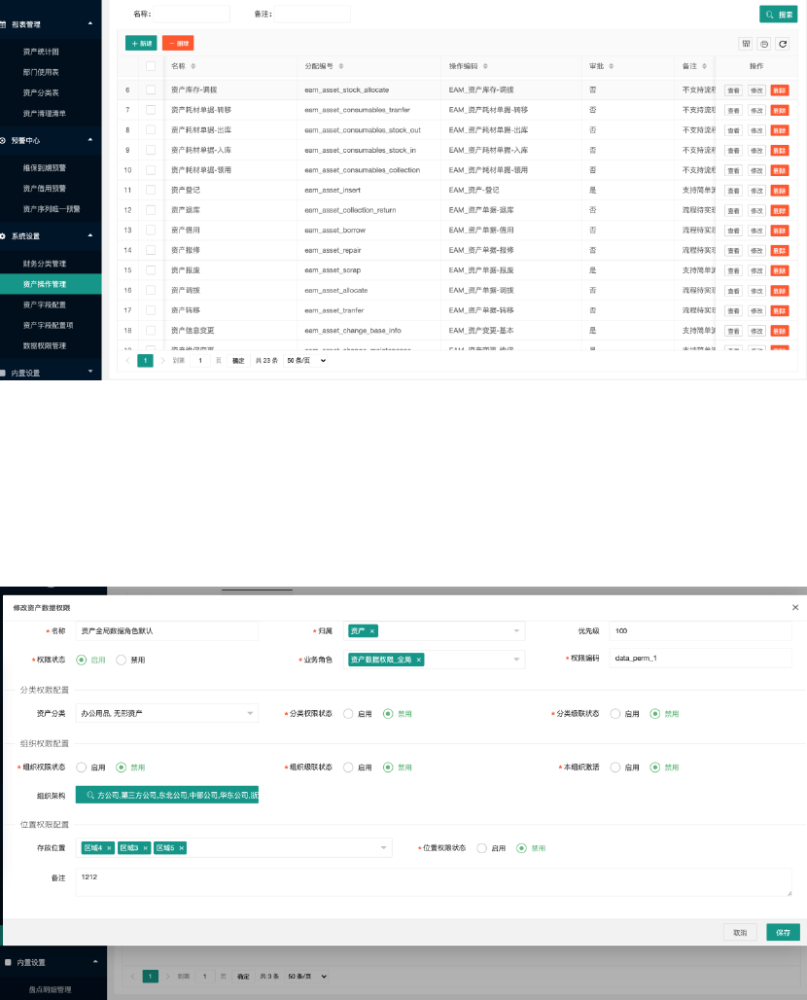
3.7.4 数据权限管理
EAM 系统资产数据的数据权限配置，每个员工必须存在能匹配到一条资产数据权限，
否则在查询资产数据时会报错，默认按照数据权限条目的优先级进行匹配。
设置说明：
业务角色：选择的业务角色中选定的员工列表具有该条目设置的数据权限。
可以对分类权限、组织权限、存放位置的数据按照数据权限的配置进行筛选处理。
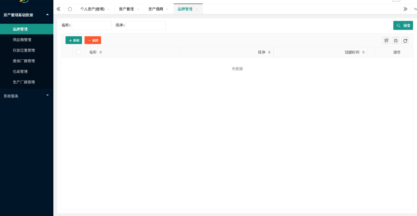
4 公共服务
4.1 资产管理基础数据
4.1.1 品牌管理
品牌管理菜单，该菜单提供对资产品牌的基本维护功能，实现资产品牌的新增、修改、
删除的基本操作。
4.1.2 维保厂商管理
维保厂商管理菜单，该菜单提供对资产维保厂商的基本维护功能，实现资产维保厂商的
新增、修改、删除的基本操作。

4.1.3 供应商管理
供应商管理菜单，该菜单提供对资产供应商的基本维护功能，实现资产供应商的新增、
修改、删除的基本操作。
4.1.4 仓库管理
仓库管理菜单，该菜单提供对资产仓库的基本维护功能，实现资产仓库属性的新增、修
改、删除的基本操作。
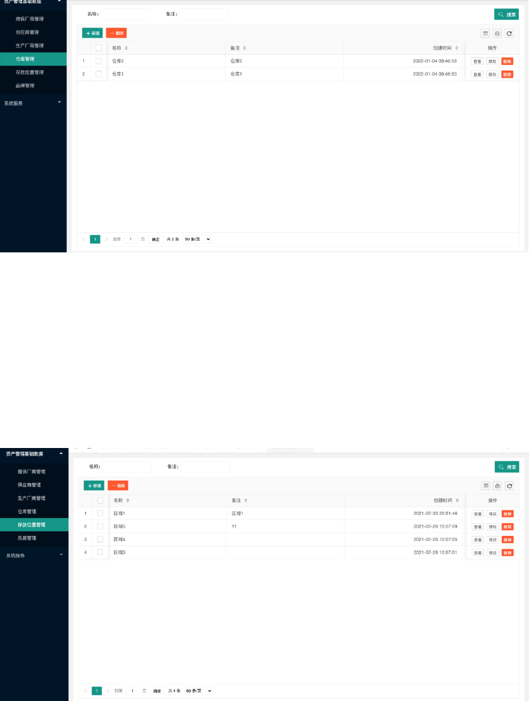
4.1.5 存放位置管理
存放位置管理菜单，该菜单提供对资产存放位置的基本维护功能，实现资产存放位置属
性的新增、修改、删除的基本操作。
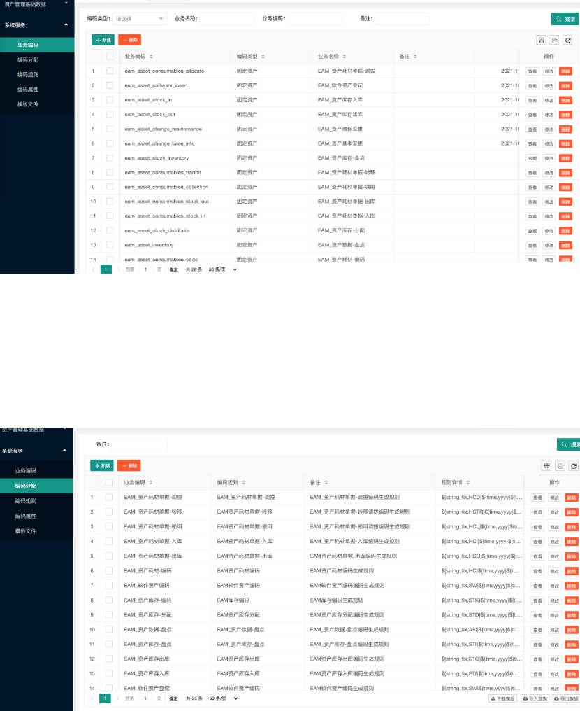
4.2 系统服务
4.2.1 业务编码
编码分配菜单，本菜单主要为开发者服务，定义涉及系统相关的业务编码定义。
4.2.2 编码分配
编码分配菜单，本菜单主要为开发者服务，通过关联业务编码和编码规则指定对应的业
务编码生成规则。
4.2.3 编码规则
编码规则菜单，本菜单主要为开发者服务，选取系统的编码属性元素，按照相应格式要
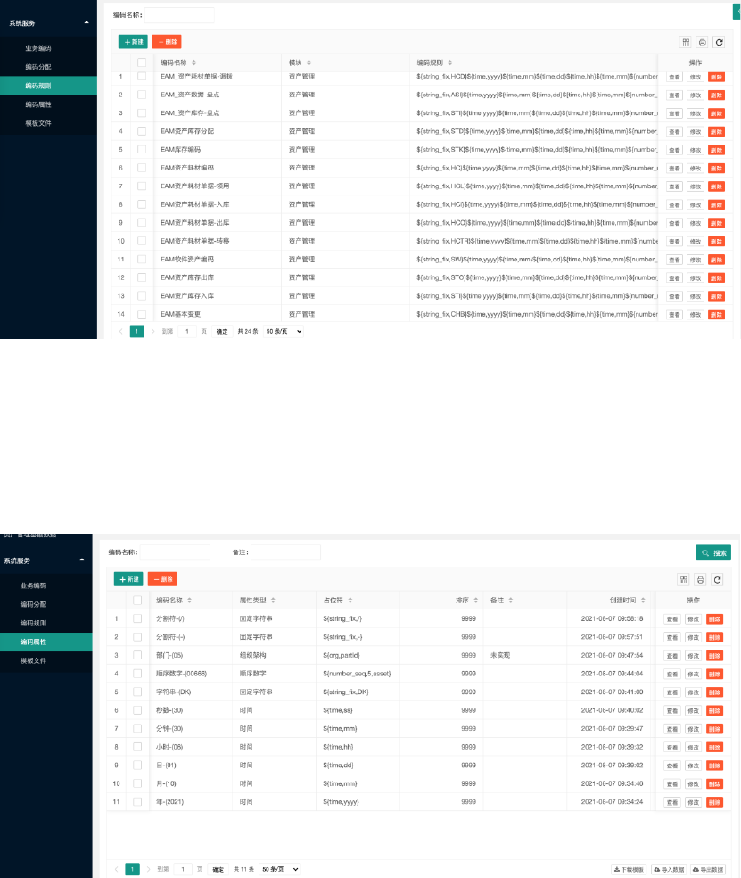
求组成一个编码生成规则，当系统选用当前规则时，将通过该规则生成对应的业务编码。
4.2.4 编码属性
编码属性菜单，本菜单主要为开发者提供，列举当前支持生成编码的组成字段，不建议
进行修改。
4.2.5 模板文件
模板文件菜单，提供本系统单据相关的下载文件模板。
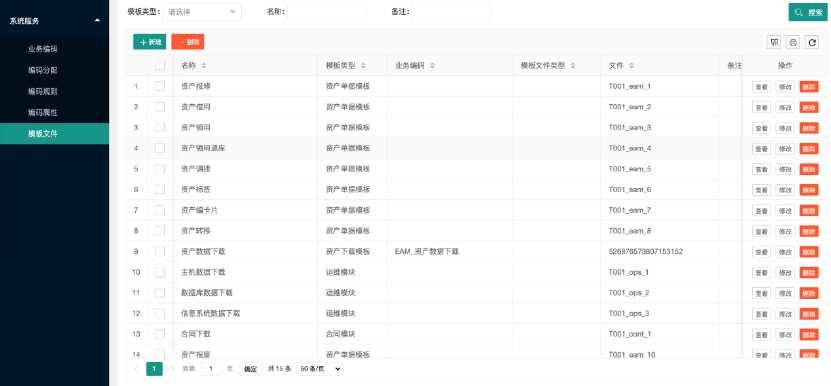